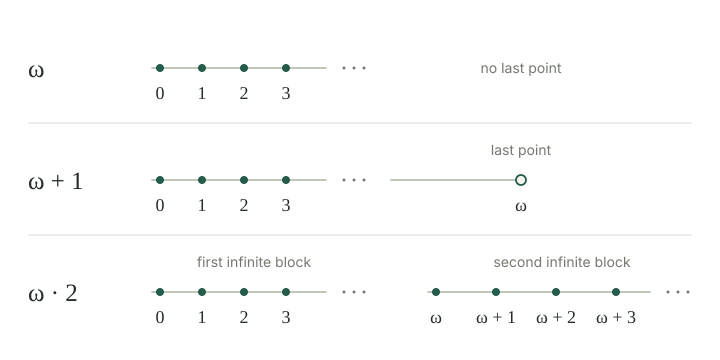

A well-order puts a first element in every nonempty subset. We now want names for the order structures themselves. Two well-ordered sets have the same order type when there is an order isomorphism between them. Such an isomorphism is unique by the uniqueness theorem for well-orders.
An ordinal is a canonical representative of a well-order type. Before constructing these representatives, keep three examples in mind: the natural numbers, the natural numbers followed by a last point, and successive infinite blocks. They are all countably infinite as sets, but their orders differ.
We use ordinary set formation, including the principle that the uniquely specified values of a rule on a set form a set. This is the set-collection principle called Replacement. We do not form a set of all sets or all well-orders, and none of the results in this entry requires the axiom of choice.
A set \(T\) is transitive if every member is also a subset: \(x\in T\) implies \(x\subseteq T\). Equivalently, \(z\in y\in T\) implies \(z\in T\). This describes membership; it is different from transitivity of a binary relation.
A von Neumann ordinal is a transitive set \(\alpha\) on which membership is a strict well-order. Thus, for members of \(\alpha\), the comparison \(x<y\) means \(x\in y\). Write \(\alpha<\beta\) for \(\alpha\in\beta\), and \(\alpha\le\beta\) for \(\alpha=\beta\) or \(\alpha<\beta\). We will prove that these comparisons also order different ordinals.
The first examples are
Each position is represented by the set of positions before it. An ordinal cannot belong to itself: if \(\alpha\in\alpha\), the membership relation on \(\alpha\) would not be irreflexive.
If \(\beta\in\alpha\), then \(\beta\) is an ordinal and, as an ordered set, is exactly the segment of \(\alpha\) below \(\beta\).
Proof
Transitivity of \(\alpha\) gives \(\beta\subseteq\alpha\). If \(z\in y\in\beta\), all three points \(z,y,\beta\) lie in \(\alpha\). Transitivity of its strict membership order gives \(z\in\beta\), so \(\beta\) is a transitive set. Its membership order is inherited from \(\alpha\), hence is a well-order. Finally, the predecessors of \(\beta\) are precisely its members. □
In particular, every member of an ordinal is an ordinal. Moreover, a subset \(I\subseteq\alpha\) that is an initial segment is either \(\alpha\) itself or one of its members. Indeed, if \(I\) is proper, the least missing point \(\beta\) gives \(I=\{\gamma\in\alpha:\gamma\in\beta\}=\beta\).
For ordinals \(\alpha,\beta\), exactly one of \(\alpha<\beta\), \(\alpha=\beta\), or \(\beta<\alpha\) holds. Also,
Proof
The intersection \(\delta=\alpha\cap\beta\) is transitive, and its membership order is inherited from \(\alpha\), so it is an ordinal. It is an initial segment of both orders: if \(x\in\delta\) and \(y\in x\), transitivity puts \(y\) in both \(\alpha\) and \(\beta\).
If \(\delta\) were proper in both, the preceding lemma would give \(\delta\in\alpha\) and \(\delta\in\beta\), hence \(\delta\in\delta\), which is impossible. Thus one of \(\alpha,\beta\) is a subset of the other. If \(\alpha\subsetneq\beta\), transitivity makes \(\alpha\) an initial segment of \(\beta\), so the same lemma gives \(\alpha\in\beta\). Conversely, \(\alpha\in\beta\) gives \(\alpha\subseteq\beta\), with equality excluded by irreflexivity. The alternatives are mutually exclusive, since a strict well-order has no cycles. □
Membership comparison of ordinals is transitive: \(\alpha\in\beta\in\gamma\) implies \(\alpha\in\gamma\), since \(\gamma\) is a transitive set.
Let \(S\) be a nonempty set of ordinals. There is a unique least member of \(S\).
Proof
Fix \(\alpha\in S\). If no member of \(S\) is below \(\alpha\), ordinal comparison makes \(\alpha\) least. Otherwise \(S\cap\alpha\) is a nonempty subset of the well-order \(\alpha\); let \(\beta\) be its least member. Any member \(\gamma\in S\) below \(\beta\) would also lie in \(S\cap\alpha\), contradicting that choice of \(\beta\). Thus \(\beta\) is least in all of \(S\). Uniqueness follows from antisymmetry. □
Consequently the comparison of ordinals restricts to a well-order on any set of ordinals. We may use induction from all earlier elements on any such set, using its inherited order.
Every well-ordered set \((A,<)\) is order-isomorphic to a unique ordinal.
We denote this ordinal by \(\operatorname{ot}(A,<)\).
Proof
First, an isomorphism \(f:\alpha\to\beta\) between ordinals must fix every point. By induction on \(\xi\in\alpha\), assume \(f(\eta)=\eta\) for all \(\eta<\xi\). An order isomorphism maps the whole segment below \(\xi\) onto the segment below \(f(\xi)\), so
Surjectivity then gives \(\alpha=\beta\). This also proves that an ordinal representative of an initial segment, when it exists, is uniquely determined.
For existence, use induction on \(a\in A\). Suppose every segment \(A_{<b}\) with \(b<a\) has an ordinal representative \(\rho(b)\). Collect these uniquely specified representatives by Replacement. If \(b<c<a\), the segment \(A_{<b}\) corresponds, under the isomorphism for \(A_{<c}\), to a proper initial segment of \(\rho(c)\). Hence \(\rho(b)\in\rho(c)\). Every member of \(\rho(c)\) is obtained this way from a unique \(b<c\).
It follows that \(\{\rho(b):b<a\}\) is a transitive set, ordered by membership exactly as \(A_{<a}\). It is an ordinal and supplies the required representative \(\rho(a)\). Induction gives these representatives for every \(a\). Another application of Replacement collects their range. The same argument shows that \(\alpha=\{\rho(a):a\in A\}\) is an ordinal and that \(a\mapsto\rho(a)\) is an order isomorphism onto it. □
The empty well-order has type \(0\). The theorem names order types without trying to make a set of all well-orders or their equivalence classes.
A well-order of type \(\alpha\) is isomorphic to an initial segment of a well-order of type \(\beta\) exactly when \(\alpha\le\beta\). The segment is proper exactly when \(\alpha<\beta\).
Proof
Transfer the proposed segment to \(\beta\) using its ordinal representative. By , that segment is \(\beta\) or an ordinal \(\gamma\in\beta\). Its type is the segment itself, so uniqueness gives \(\alpha=\beta\) or \(\alpha=\gamma<\beta\). Conversely, inclusion of \(\alpha\) into \(\beta\) has precisely the required initial-segment range. □
This compares all pairs of well-orders. An arbitrary increasing injection need not have an initial-segment range: \(n\mapsto n+1\) is increasing on \(\mathbb N\), but its image omits the first point.
The successor of an ordinal \(\alpha\) is
This is an ordinal. It is transitive because the members of its new point \(\alpha\) are already in the old set; membership orders the old points as before and puts \(\alpha\) after all of them. A nonempty subset either contains an old point and has an old least member, or is the singleton \(\{\alpha\}\).
It is the least ordinal strictly above \(\alpha\): if \(\alpha<\beta\), then transitivity gives \(\alpha\cup\{\alpha\}\subseteq\beta\). Thus \(\alpha<\beta\) is equivalent to \(\alpha+1\le\beta\). We use \(+1\) as successor notation here; adding a one-point order gives the same construction.
An ordinal is a successor exactly when its order has a greatest point. If that point is \(\alpha\), all other members are exactly the members of \(\alpha\), so the ordinal is \(\alpha+1\). This predecessor \(\alpha\) is unique.
A limit ordinal is a nonzero ordinal that is not a successor. Under this convention, \(0\) is neither a successor nor a limit. By , a limit ordinal has no greatest member.
For a nonzero ordinal \(\lambda\), the following conditions are equivalent: it is a limit; for every \(\beta<\lambda\), one has \(\beta+1<\lambda\); and
Indeed, if there is no greatest member, each \(\beta\) has a larger member, and its successor still lies below \(\lambda\). Every member \(\beta\) then belongs to the member \(\beta+1\), proving the union identity; the reverse inclusion follows from transitivity. A successor cannot satisfy that identity, since its final member is not in the union of its members.
Define the finite ordinals by \(0=\varnothing\) and \(n+1=n\cup\{n\}\). Induction gives \(n=\{0,\ldots,n-1\}\). The set
of these finite ordinals is transitive, and membership agrees with the usual natural-number order. It is therefore an ordinal. It has no greatest point, so it is a limit. Its members are all the finite ordinals, which makes it the least infinite ordinal and the least limit ordinal.
The notation \(\omega\) emphasizes order type, while \(\mathbb N\) names the familiar underlying set of numbers. The ordinal \(\omega+1\) has a final point after all finite positions. It is larger as an ordinal, although it is still countably infinite as a set.
For finite \(n\), write \(\omega+n\) for \(n\) successive applications of successor to \(\omega\), so \(\omega+0=\omega\). In the figure, \(\omega\cdot2\) names the order type of two consecutive natural-number blocks. These notations describe the displayed orders without assuming general ordinal addition or multiplication.

Give a bijection between \(\omega+1\) and \(\omega\). Why does it fail to be an order isomorphism?
Send the new final point \(\omega\) to \(0\), and send each finite ordinal \(n\) to \(n+1\). These images cover all naturals without repetition. The map sends the greatest point to the first point, so it does not preserve order. There is no order isomorphism at all: its image would make \(\omega\) have a greatest point. A bijection records size, not the arrangement of positions.
For any set \(S\) of ordinals, including the empty set,
Proof
The union is a transitive set of ordinals. Ordinal comparison makes its membership relation total, and gives a least element in every nonempty subset, so it is an ordinal. Each \(\alpha\in S\) is a subset of the union, hence is at most that ordinal. If \(\gamma\) is any other upper bound, every \(\alpha\in S\) is a subset of \(\gamma\), so their union is too. This proves leastness of the upper bound. □
The empty supremum is \(0\). If \(S\) has a greatest member, its supremum is that member. If \(S\) is nonempty and has no greatest member, its supremum is a limit ordinal. Its supremum is nonzero, since a nonempty set with supremum zero would contain only zero and have a greatest member. It cannot be a successor \(\beta+1\), because the union would then contain \(\beta\) in some \(\alpha\in S\), forcing \(\alpha=\beta+1\) to be greatest in \(S\).
Compute \(\sup\{n:n<\omega\}\), \(\sup\{\omega\}\), and \(\sup\{\omega+n:n<\omega\}\). Here \(\omega+n\) means adding \(n\) final points. Which sets contain their supremum?
The first supremum is \(\omega\), absent from the set of finite ordinals. The second is \(\omega\), which is present. The third is the order type of two successive natural-number blocks: the first block contributes the initial \(\omega\) positions, and the union of all finite tails contributes a second infinite block. It is absent from the displayed set, whose tails are all finite. This is the type \(\omega\cdot2\) displayed in the figure. See the arithmetic of repeated blocks for its description using addition and multiplication.
For a fixed ordinal \(\theta\), its elements form a well-ordered set. The three-case induction principle therefore proves a property at every \(\alpha<\theta\) by checking zero, successor positions, and nonzero limit positions. At a limit, the hypothesis concerns all earlier ordinals, not a nonexistent last predecessor.
Likewise, for a fixed value set \(S\), maps \(\Phi_\alpha:S^\alpha\to S\) give a unique function \(F:\theta\to S\) with \(F(\alpha)=\Phi_\alpha(F|_\alpha)\), by the recursion theorem. Here the earlier segment below \(\alpha\) is literally the set \(\alpha\).
The values may instead be sets with no containing set \(S\) specified in advance. For this we use Replacement to collect uniquely determined outputs, rather than choosing them.
Set-valued recursion. Suppose a rule \(\Phi\), defined by a formula with fixed set parameters, assigns exactly one set \(\Phi(\alpha,h)\) to every ordinal \(\alpha\) and every set-function \(h\) with domain \(\alpha\). For every ordinal \(\theta\), there is a unique set-function \(F_\theta\) with domain \(\theta\) satisfying
The rule must supply an output for every such history, not just histories already known to satisfy the equations. Its description is a definable rule; we do not assume its entire graph is a set.
Proof
Call a set-function \(f\) a partial solution if its domain is an ordinal \(\beta\) and \(f(\alpha)=\Phi(\alpha,f|_\alpha)\) for every \(\alpha<\beta\). Two partial solutions agree wherever both are defined. Otherwise the set of their disagreement positions has a least member \(\alpha\). Their restrictions to \(\alpha\) agree, so the rule gives the same value at \(\alpha\), a contradiction. Restrictions of a partial solution are again partial solutions. In particular, a partial solution on any given domain is unique.
Fix \(\theta\). By transfinite induction, construct a partial solution on every \(\beta\le\theta\). At zero the empty function works. If \(f_\beta\) exists, the rule supplies the set \(y=\Phi(\beta,f_\beta)\). Adjoin the pair \((\beta,y)\) to its graph. This extends the domain to \(\beta+1\), preserves every earlier equation, and satisfies the new equation at \(\beta\).
At a nonzero limit \(\lambda\le\theta\), a unique partial solution \(f_\gamma\) exists for every \(\gamma<\lambda\). Replacement collects these uniquely specified graphs into a set indexed by the set \(\lambda\). Their union is a set-function, because the graphs agree on overlaps. Its domain is \(\bigcup_{\gamma<\lambda}\gamma=\lambda\). For each \(\alpha<\lambda\), we have \(\alpha+1<\lambda\), so \(f_{\alpha+1}\) supplies both the value at \(\alpha\) and its entire earlier history. The union therefore satisfies the equation at \(\alpha\). This completes the induction. Its solution on \(\theta\) is \(F_\theta\), and compatibility proves uniqueness. □
If \(\eta\le\theta\), compatibility gives \(F_\theta|_\eta=F_\eta\). Thus the solutions describe one definable class function on all ordinals: its value at \(\alpha\) is \(F_{\alpha+1}(\alpha)\), and each restriction to a set-sized ordinal is a set-function. Replacement also collects the values on any such domain. This does not make the whole class graph a set, and the argument requires no Choice.
There is no set containing every ordinal.
Proof
If \(S\) contained every ordinal, separate out its ordinal members and take their supremum \(\gamma\). Then \(\gamma+1\) would also be among those members, forcing \(\gamma+1\le\gamma\), a contradiction. □
Thus “all ordinals” is a collection, often called a proper class, rather than a set. Suprema in this entry are taken over sets. There is a larger ordinal than any given ordinal, but not a set containing all of them.